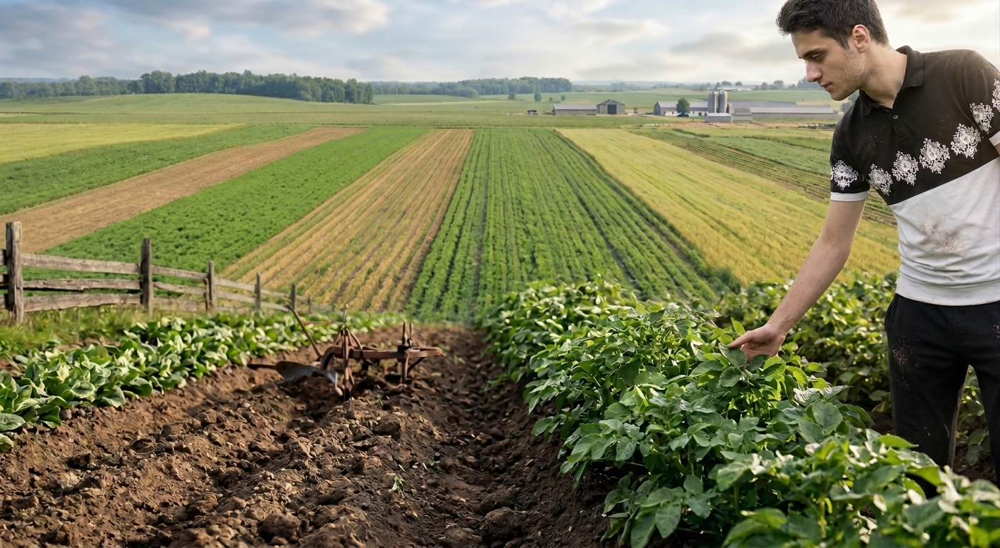
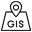
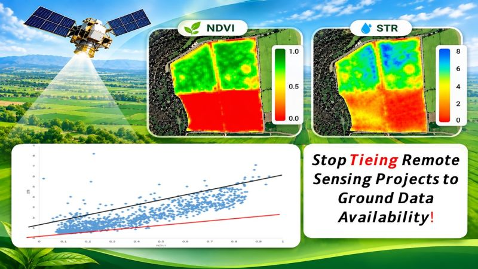

Rashid Rasouli
I'm Remote Sensing Specialist
About Me
Geospatial and Remote Sensing Specialist with a background in Water Resources Engineering and over three years of experience in research and development. I work with Earth observation data, GIS, Python, Google Earth Engine, and machine learning to develop analytical workflows for agricultural, hydrological, meteorological, and environmental applications. My experience covers the full geospatial workflow, from data acquisition and preprocessing to analysis, quality control, and the preparation of decision-support maps and outputs.
Remote Sensing & Geospatial Data Specialist
Precision Agriculture | Water Resources | Climate & Environmental Monitoring | Machine Learning
- Location: Tehran, Iran
- Degree: M.Sc. in Water Resources Engineering
- Email: Rashid.rhi.74@gmail.com
- LinkedIn: View profile
Technical Skills
Tools and technologies used in geospatial analysis, Earth observation, and environmental applications.
GIS & Earth Observation
- Google Earth Engine

ArcGIS- QGIS
Programming, Modeling & Data
- Python
 Machine Learning
Machine Learning- SQL (Basic)
- Git (Basic)
- WEAP
Resume Overview
A summary of my academic background, professional experience, and selected geospatial projects.
Download PDF ResumeEducation
Master of Water Resources Engineering
2019 – 2023
Tarbiat Modares University, Tehran, Iran
- Academic focus included water resources engineering and geospatial applications.
Bachelor of Water Resources Engineering
2015 – 2019
Gorgan University of Agricultural Sciences and Natural Resources, Gorgan, Iran
- Academic background in water resources engineering, GIS, and geospatial technologies.
Selected Projects
Remote Sensing Assessment of Hamoun Lake
Analysis of upstream river abstractions and dam operations in Afghanistan and their potential effects on water availability and inflows to Hamoun Lake, using satellite-derived snow cover, precipitation, and lake surface area.
Storm & Flood Forecasting Applications
Geospatial and meteorological analysis supporting storm and flood forecasting in the Khersan 3 and Chamshir dam catchments.
Professional Experience
R&D Specialist → Senior R&D Specialist / Project Lead
2022 – 2026
Payeshgar Tadbir Afzar, Tehran, Iran
- Led research and development activities for remote sensing and geospatial projects in water resources, hydrology, meteorology, and environmental monitoring.
- Designed end-to-end analytical workflows, including problem definition, dataset selection, data acquisition, processing, quality control, and preparation of final outputs.
- Developed Google Earth Engine algorithms and Python workflows for satellite data processing, spatial analysis, and environmental monitoring.
- Led technical project teams of up to four members, coordinated tasks, defined technical requirements, and supported implementation.
- Investigated the effects of upstream river abstractions and dam operations in Afghanistan on Hamoun Lake using satellite-derived snow, precipitation, and lake-area information.
- Developed and automated GIS workflows for zonal statistics, raster/vector clipping, snow-cover extraction, area calculation, and precipitation-layer ensemble processing.
- Contributed to weather and flood forecasting projects, including Python-based processing of forecast outputs from multiple systems and preparation of daily precipitation products.
- Performed quality control on satellite-derived datasets and trained colleagues in remote sensing and Google Earth Engine workflows.
Portfolio
Selected work in applied remote sensing, geospatial analysis, and precision agriculture. These projects demonstrate how satellite observations, GIS, and analytical methods can be used to assess environmental and agricultural conditions and turn geospatial data into practical information for decision-making.
- All
- Precise Agriculture
- Remote Sensing



OPTRAM METHOD
One such method is OPTRAM, which uses vegetation indices and Shortwave Infrared (SWIR) reflectance to estimate soil moisture. It can provide valuable insights into soil moisture conditions, even during active vegetation growth, helping us better understand irrigation conditions and water management practices.

Services
Remote sensing and geospatial services that help researchers, agricultural businesses, and organizations extract meaningful information from Earth observation and spatial data.
Precision Agriculture Solutions
Satellite-based monitoring and spatial analysis of crop conditions, including plant water status and vegetation characteristics, to support field assessment and more informed agricultural management.
Remote Sensing & GIS Consulting
Technical guidance on selecting satellite data, designing processing workflows, applying geospatial analysis methods, interpreting results, and preparing maps and analytical outputs for research or operational projects.
Remote Sensing & GIS Training
Practical training in satellite image processing, Google Earth Engine, GIS workflows, and geospatial data analysis, with exercises based on real-world agricultural and environmental applications.
Contact
For professional inquiries, collaboration, or project discussions, feel free to get in touch.